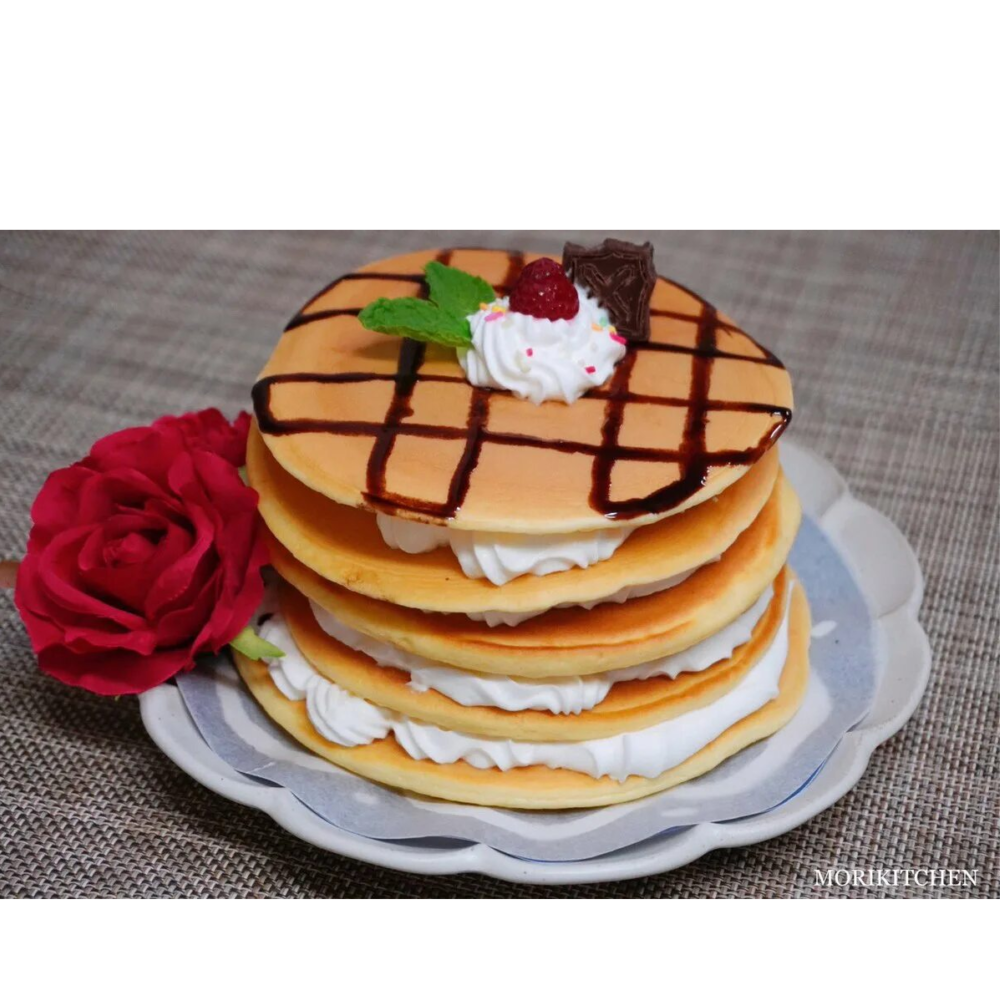

 Ингредиенты:
- Куриное яйцо
- Молоко — 100 мл
- Смесь для выпечки — 150 г
- Взбитые сливки — 180 мл
- Сахар — 10 г
- Шоколад — 5 г
- Шоколадный сироп
- Малина, мята и посыпка (по желанию)
Способ приготовления:
- Смешай яйцо, молоко и смесь для выпечки.
- Подогрей сковороду, после чего положи ее на несколько секунд на мокрое полотенце, чтобы сбить температуру. Поставь на медленный огонь и начинай делать блинчики.
- Готовь примерно 3 минуты, после чего, как увидишь дырочки на поверхности, переворачивай и готовь еще пару минут. Так каждый блинчик. Для нашего мини-тортика нужно минимум 5 штук.
- Начинаем готовить крем. Остуди миску в тазике со льдом и смешай взбитые сливки и сахар. Тщательно взбей все вместе, после добавив их в кондитерский мешок (но и ложечкой тоже можно) 😉
- Формируем блинный тортик: сначала блин, потом крем и так друг за дружкой. Сверху украшаем шоколадом, малиной, мятой и еще взбитыми сливками. Ни один сладкоежка не останется равнодушным к блинчикам по рецепту лучшей горничной Ордо Фавониус! 🥰